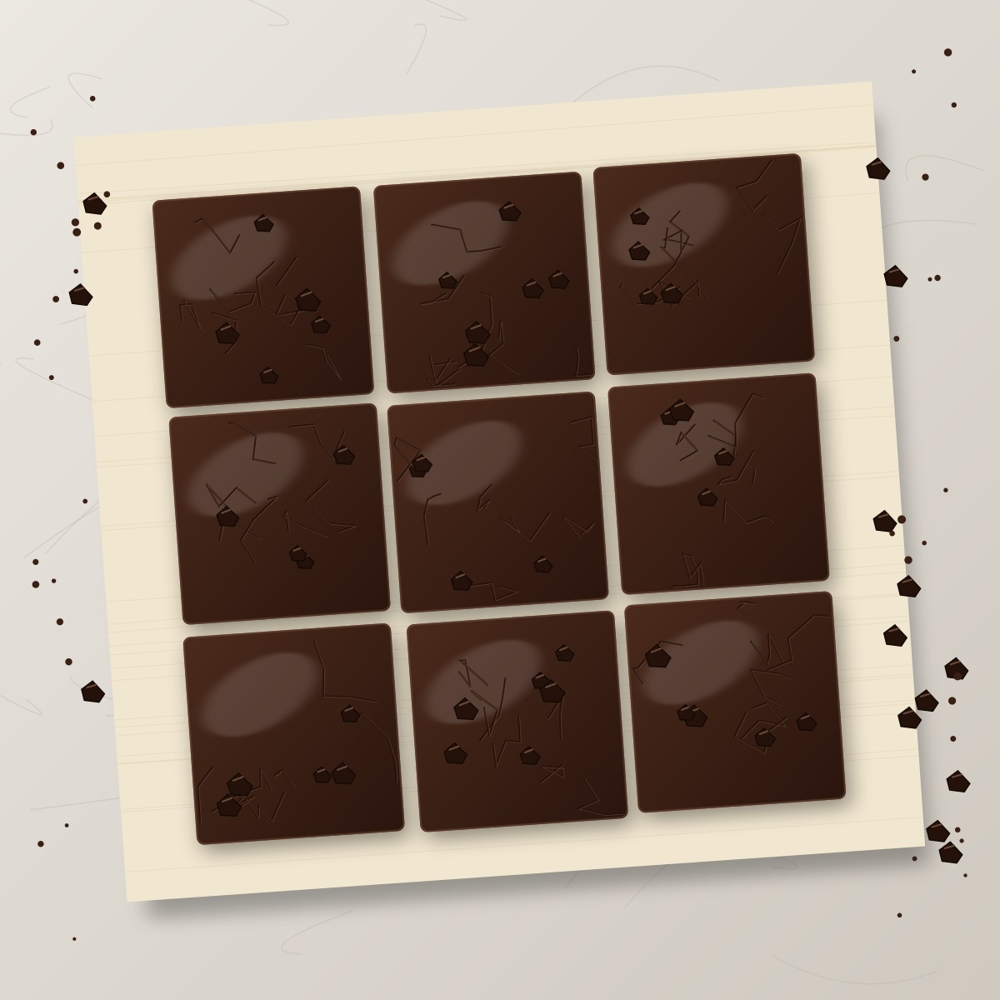

Brownie

Description
These ultra-fudgy homemade brownies feature a thin, shiny, crackly top and a dense, gooey chocolate center. Made with melted butter, brown sugar, and an extra egg yolk for maximum richness, this simple one-bowl recipe delivers deep cocoa flavor in every bite—no boxed mix required.
Ingredients
- Unsalted butter: 10 tablespoons (142g, melted)
- Granulated white sugar: 1 cup (200g)
- Packed light or dark brown sugar: 1/4 cup (50g)
- Large eggs: 2 large eggs (at room temperature), plus 1 extra egg yolk for extra richness
- • Vanilla extract: 1 teaspoon
- Unsweetened cocoa powder: 3/4 cup (75g) — Dutch-process cocoa works best for a deeper color
- All-purpose flour: 1/2 cup (60g)
- Salt: 1/2 teaspoon
- Semisweet or dark chocolate chips: 1/2 to 3/4 cup (extra for folding and topping)
Steps
- Preheat your oven to 350°F (175°C). Line an 8x8-inch baking pan with parchment paper, leaving a little overhang on the sides for easy removal.
- In a large bowl, whisk together the melted warm butter, granulated sugar, and brown sugar until well combined and glossy.
- 1. Add the eggs and vanilla extract. Whisk vigorously for about 1 to 2 minutes until the mixture looks slightly pale and thick. (This helps create that thin, crackly top crust.)
- Sift in the cocoa powder, all-purpose flour, and salt.
- Use a rubber spatula to gently fold the dry ingredients into the wet mixture just until the flour disappears. Do not overmix, or the brownies will turn out cakey instead of fudgy. Fold in the chocolate chips.
- Spread the thick batter evenly into your prepared pan. Top with a few extra chocolate chips if desired. Bake for 25 to 30 minutes. A toothpick inserted into the center should come out with a few moist crumbs attached, not wet batter.
- Let the brownies cool completely in the pan before lifting them out with the parchment paper and slicing.
Home